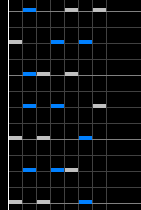

📑 文章目录（2 节）
本文将解释本站文章中经常出现的一个词——“读谱能力（谱面认识力）”。
读谱能力高 ＝ 思考指法的时间短
IIDX 是一款看着下落谱面进行按键的游戏。
- 看到音符（Notes）
- 在脑中思考要使用的手指和指法（运指）
- 按下按键
整个过程由这样一连串步骤组成。
所谓“读谱能力高”，就是指“2. 在脑中思考要使用的手指和指法的时间很短”。

像这样 3 键同时押接连不断下落的谱面，在高手看来其实不算什么。
觉得这种谱面很难的人，与高手之间最大的差距就在于读谱能力。在这种密度下，如果还要逐个去思考指法，按键根本来不及。
高手看到谱面的瞬间，脑中就会立刻浮现出对应指法，因此敲完第一个音到敲下一个音之间会有充裕的余量。
“锻炼读谱能力” ＝ “消除思考指法所需的时间”。
如何锻炼读谱能力？
要锻炼读谱能力（也就是消除思考指法的时间），
- 看到音符
- 在脑中思考要使用的手指和指法（运指）
- 按下按键
除了不断重复这个过程之外别无他法。不过，这听起来和普通的打歌没什么两样吧。
没错。锻炼读谱能力并没有什么特别的专项练习方法。
非要说需要注意哪些要点的话：
- 只打简单的曲子是不会进步的
- 反复练习处于自己“勉强能打下来”边缘的密度，效率更高
- 反复打同一张谱面会变成靠背谱记忆来按，从而沾癖（练出坏癖）
→ 关于沾癖问题，请积极开启 RANDOM（乱） - 绿数字最好稍微留一点余量
→不要把绿数字调得过小 - 打容易疲劳的谱面会导致注意力下降，反而影响效率
（相比耐力马拉松型谱面，张弛有度的谱面更适合用来练习）
只要注意以上这几点，就能更高效地提升实力。